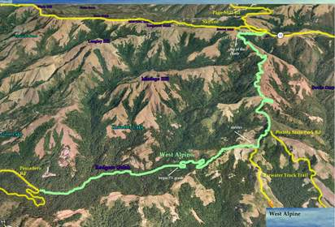

Week 2: West Alpine
11 Oct 2008
|
2008 Low-Key Hillclimbs Week 2: West Alpine 11 Oct 2008 |
|  |
| Aerial photo of West Alpine, courtesy of Stanford Cycling |
This is a new one for the Low-Key Hillclimbs: West Alpine Road. Recently repaved for its Low-Key debut, excellent climbing conditions await. The climb begins at the intersection with Pescadero Road, at the base of Haskins Hill. The road moves gradually upward through the lush redwoods of Portola State Park before the left-hand switchback which marks the beginning of the real climbing. From here, the grade is steady to the stop sign marking the intersection with Portola Park Road. Then, a respite from the climbing, with rollers before the climbing starts again, finishing at mile marker 4.7 near Russian Ridge. After getting timed there, you'll gently descend to near the Russian Ride parking lot for post-ride fun and refreshments.
Our insurance demands it: helmets are required. Sorry kids, no exceptions!
We'll meet at Sam McDonald Park on Pescadero Road 1/2 mile west of West Alpine. Water and restrooms are available. We'll then promenade down the hill to the start on West Alpine. Parking is available at Sam McDonald for a fee, however, we ask you park elsewhere if possible and ride in to the start to avoid creating any congestion and competition with hikers and equestrians. Low-key, with its kindler and gentler than average start time, allows plenty of time to ride to the start from the Peninsula. Or, if you need to drive, consider parking at Russian Ridge, Montebello or Los Trancos Open Space Preserves near the top of Page Mill then riding down Highway 84 or West Alpine. Then after the ride, you can return to your vehicle straight from the finish. Alternately, starting from Pescadero or San Gregorio f you're coming from the north or south, it'll be a nice short ride back to the coast after the climb. Many, many options.
| stats | 7.5 miles, 1990 feet, 5.0% |
| format | mass start |
| time | reg 9:15 - 10:00 start 10:10am |
| coordinator | |
| aerial view | Stanford Cycling |
| route profile | Motionbased profile |
| weather | Weather Underground Weather Bonk |
| registration form |
PDF release form |
| entry fee | $10 voluntary donation free for juniors 2 free for volunteers free for coordinators |

{kind=link}
{kind=link}